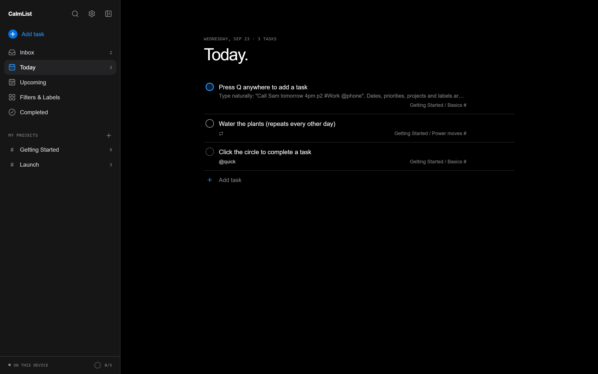
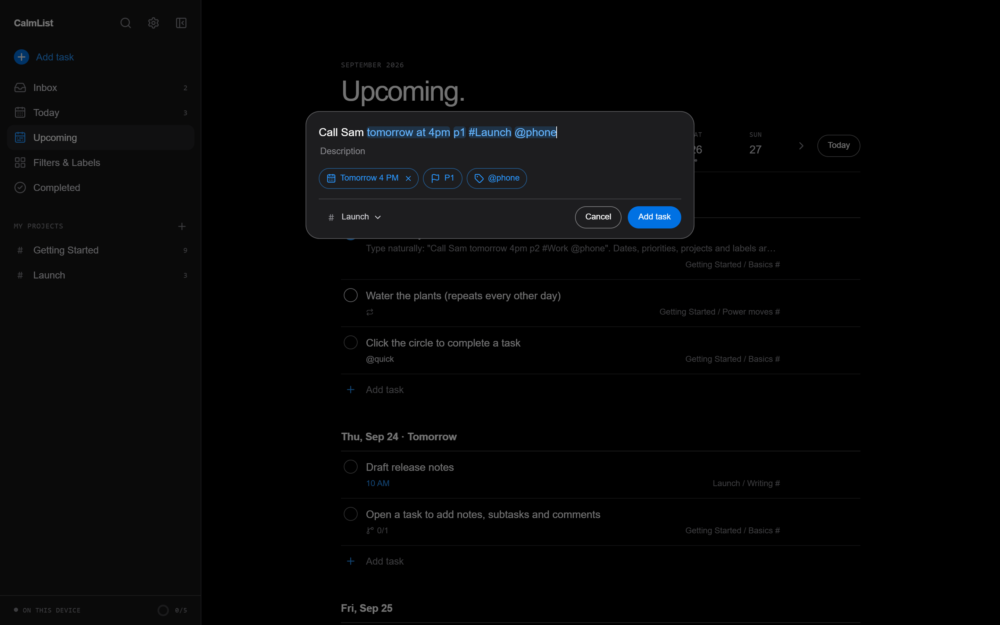
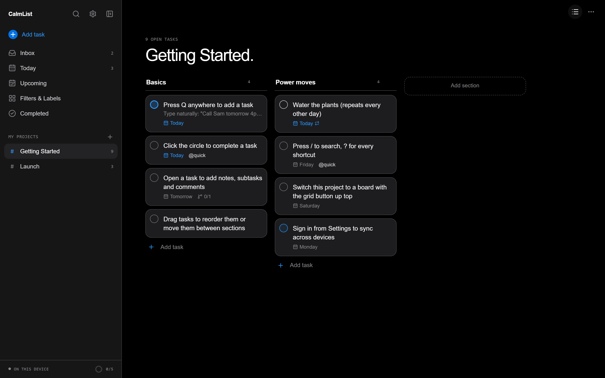
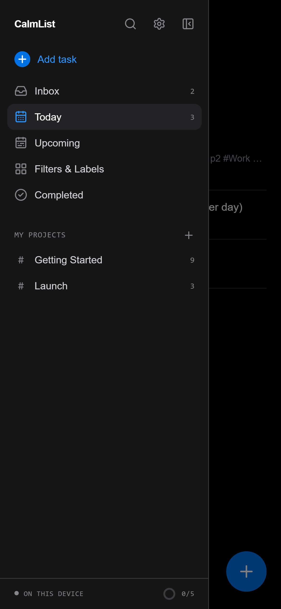

CalmList
Plan less.
Finish more.
A keyboard-first task manager that reads what you type, keeps everything on your device, and syncs through a server you own.

Quick Add
Type it.
It understands.
“Call Sam tomorrow at 4pm p1 #Launch @phone” becomes a task with a date, a time, a priority, a project and a label. Every token lights up as you type.

Everything a list needs
Built for the
way work moves.
Today & Upcoming
Overdue work up top, a week strip to jump ahead, and one tap to reschedule it all.
Repeating tasks
“every weekday”, “every other week”, “every! 3 days”. Completing one rolls it forward.
Boards and sections
Switch any project between a list and a board. Drag tasks across sections.
Filters
Saved queries like (today | overdue) & #Work & !@waiting, validated as you type.
Sub-tasks and notes
Break work down, add descriptions, deadlines and comments in the task view.
Command palette
Press / to find any task, project or label, or run a filter on the spot.
Undo everything
Complete, delete or reschedule and change your mind from the toast.
Daily goal
A streak, a 14-day chart and an activity log of what you finished.
Boards
One project.
Two ways to see it.
Sections become columns. Drag a card to move it, open it to see everything behind it.

Local-first
Yours,
even offline.
Tasks live in your browser from the first keystroke. Sign in to a CalmList server and every device stays in step, with edits made offline sent the moment you reconnect.

Self-host
One command.
Your server.
The sync service is a single Node process with an SQLite file. It also serves the app, so one container is the whole product.
Docker
docker build -t calmlist .
docker run -p 8787:8787 -v calmlist:/data calmlistOr from source · Node 24
npm install
npm run build
npm start # http://localhost:8787Ready when you are